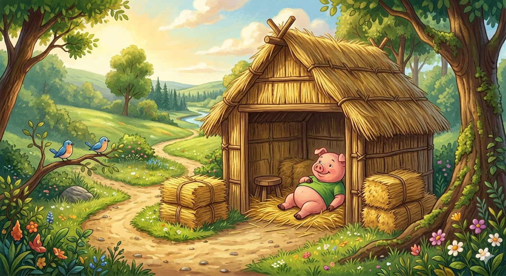
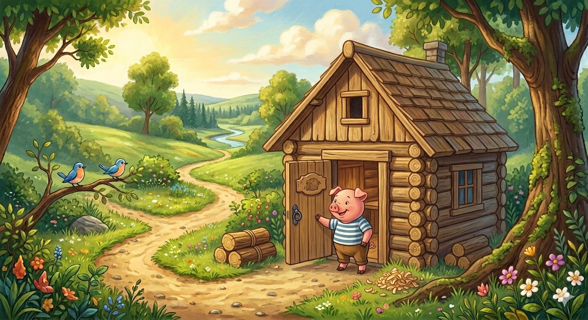
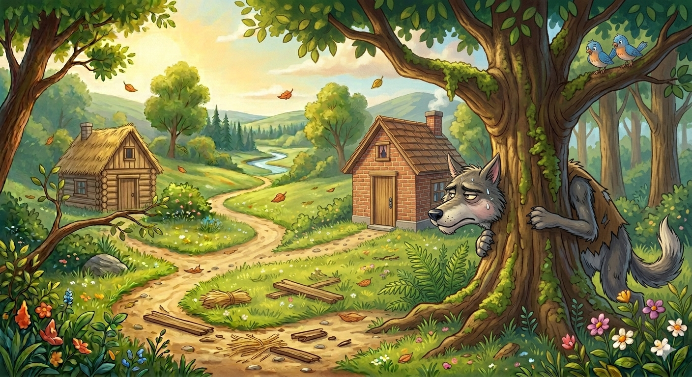
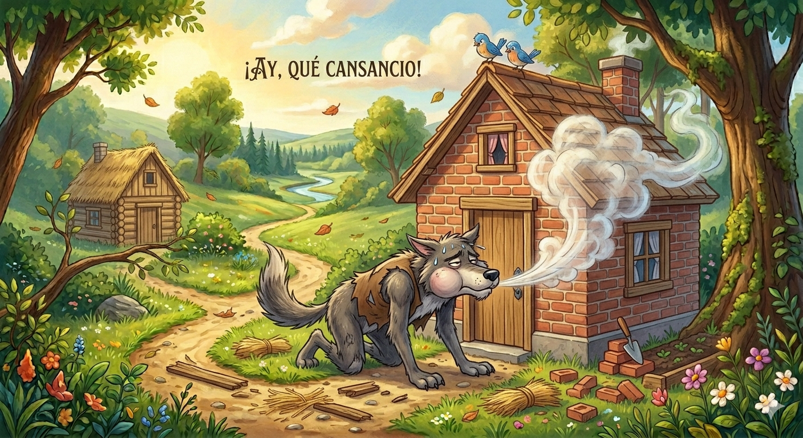
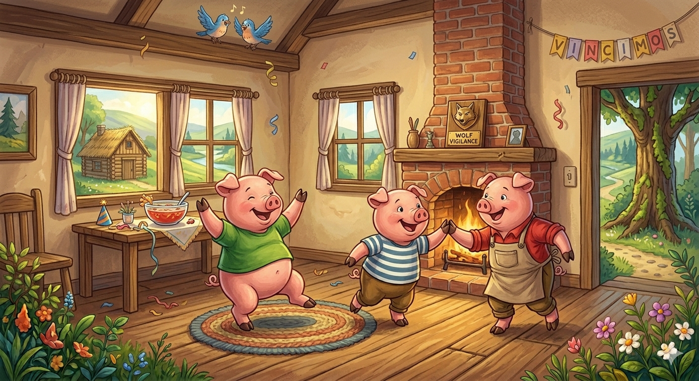

Historia
Había una vez tres cerditos que vivían en el bosque y decidieron construir sus propias casas para protegerse del temible lobo feroz. El cerdito menor, que era el más perezoso, decidió hacer su casa de paja. En un abrir y cerrar de ojos la terminó y se puso a descansar.

El cerdito mediano, que era un poco más trabajador pero no quería esforzarse demasiado, construyó su casa de madera. Tardó un par de días y luego se fue a jugar con su hermano.l cerdito mediano, que era un poco más trabajador, decidió construir su casa de madera. Le llevó un poco más de tiempo, pero finalmente la terminó y se sintió orgulloso de su trabajo.

El cerdito mayor, que era el más sabio y paciente, sabía que el lobo era peligroso. Por eso, decidió invertir tiempo y esfuerzo en construir una casa fuerte de ladrillos y cemento. Sus hermanos se burlaban de él por trabajar tanto, pero él no les hizo caso.

Un buen día, el lobo feroz apareció. Fue a la casa de paja del hermano menor y gritó:
"¡Soplaré y soplaré, y tu casa derribaré!"
El lobo sopló con fuerza y la casa de paja voló por los aires. El cerdito, asustado, corrió a refugiarse en la casa de madera de su hermano mediano.
El lobo los siguió hasta allí y volvió a gritar:
"¡Soplaré y soplaré, y tu casa derribaré!"
Sopló dos veces y la casa de madera se desmoronó. Los dos cerditos corrieron desesperados, con el lobo pisándoles talones, hasta llegar a la casa de ladrillos del hermano mayor.
El lobo, furioso y hambriento, llegó a la tercera casa y rugió:
"¡Soplaré y soplaré, y la casa derribaré!"

Sopló y sopló con todas sus fuerzas, pero la casa de ladrillos no se movió ni un milímetro. Agotado y sin aire, el lobo vio la chimenea y decidió entrar por ahí. Pero el cerdito mayor, que era muy astuto, ya había puesto una olla de agua hirviendo al fuego.
Cuando el lobo cayó por la chimenea, se quemó la cola tan fuerte que dio un grito tremendo y salió corriendo del bosque para nunca más volver.uando el lobo bajó por la chimenea, cayó directamente en la olla de agua hirviendo y salió disparado hacia el cielo, gritando de dolor. Los tres cerditos celebraron su victoria y aprendieron una valiosa lección: la paciencia, el esfuerzo y la dedicación siempre dan frutos.
Moraleja
El trabajo bien hecho y el esfuerzo siempre tienen su recompensa. Desde ese día, los tres cerditos vivieron felices y seguros en la casa de ladrillos.
